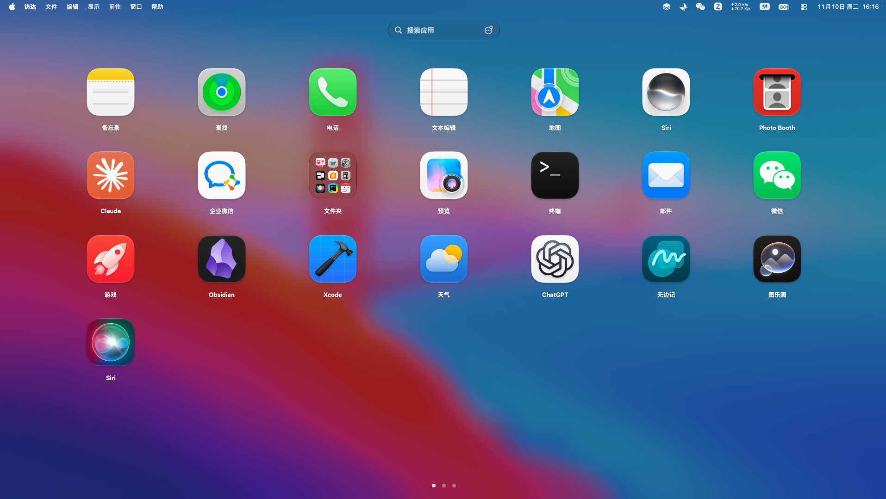

输入名称，快速找到
打开启动台后直接输入应用名称，即时筛选结果；按下 Return，即可启动目标应用。
JLaunchPad · for macOS
把所有应用放在触手可及的地方。快速搜索、自由整理，用你熟悉的方式打开，让每一次启动都更顺手。
专为 macOS 打造

JLaunchPad 实际界面让应用启动回归简单
JLaunchPad 为 Mac 提供熟悉的启动台体验。应用一目了然，布局按你的习惯组织；需要某个 App 时，呼出、搜索、启动，一气呵成。
打开启动台后直接输入应用名称，即时筛选结果；按下 Return，即可启动目标应用。
拖动应用调整位置，跨页整理，或把常用应用收入文件夹。你的排列方式会被保存。
喜欢沉浸感，就用全屏启动台；想快速找应用，就切换为窗口显示。
设置键盘快捷键或触控板手势，让启动台自然融入日常操作。
更多贴心细节
从应用来源到显示方式，都可以按自己的使用习惯调整。常用的留在眼前，不常用的收起来。